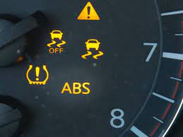
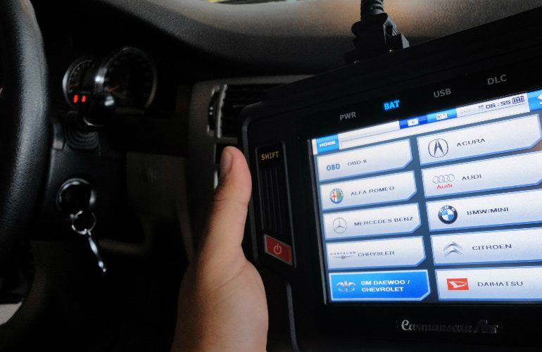
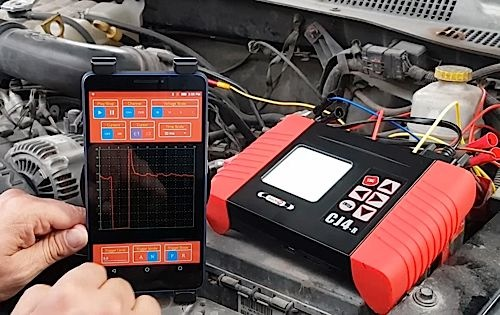
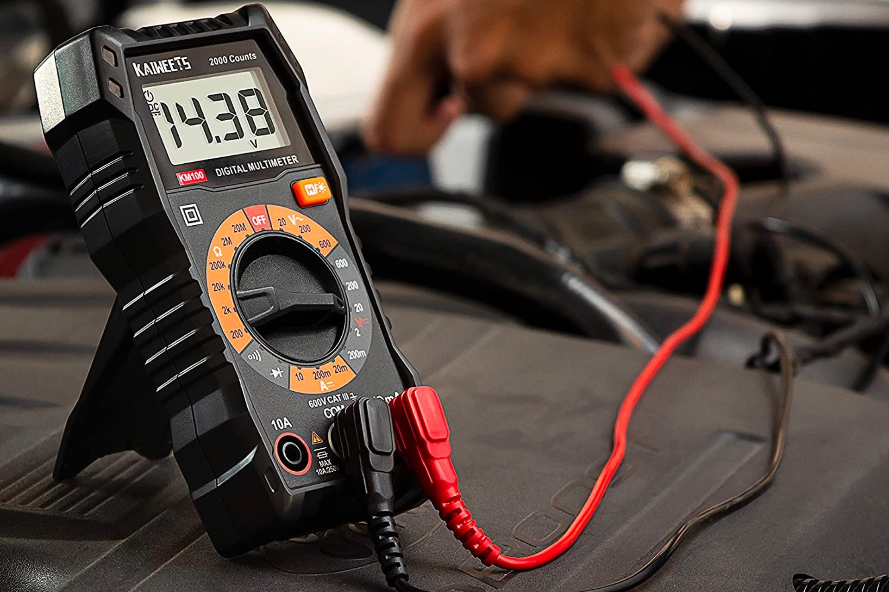
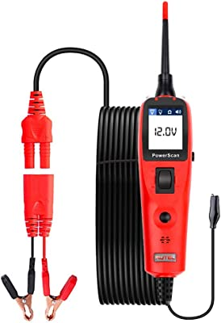
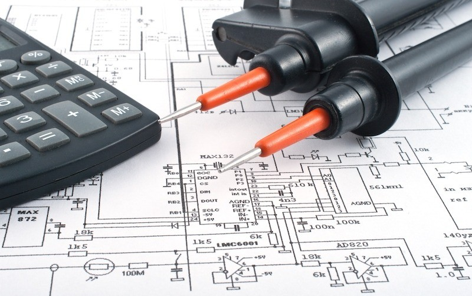

En un mundo donde nuestros vehiculos cada vez dependen mas de la electronica para ser mas eficientes, tambien los metodos y herramientas de detecion de fallas requieren ser actualizados, por ende la necesidad de equipos de escaneo automotriz que esten al dia.
El 90% de las marcas usan la señal de luz con forma de motor, que podras ver en la imagen, para indicar que existe un problema en nuestro vehiculo que registra la computadora del mismo.

Tambien existen otras señales luminicas en nuestro tablero que nos pueden indicar problemas de suspension, frenos, seguridad o proximos servicios en nuestro vehiculo.





Ademas de contar con un escaner actualizado, tambien usamos herramientas como multimetro, punta logica, osciloscopio, entre otras, necesarias para revisar fallas electricas y electronicas, ademas de señales y sensores, siempre con el uso de el diagrama electrico correspondiente.
